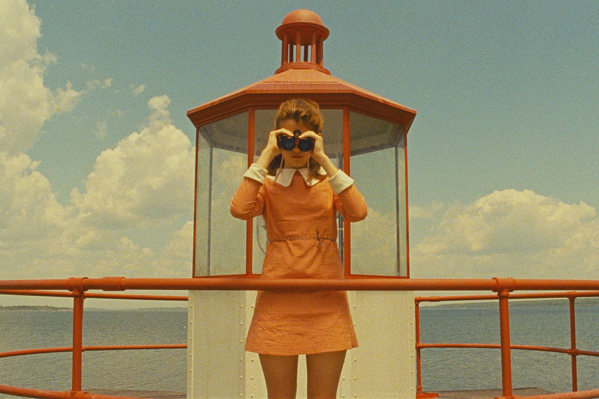
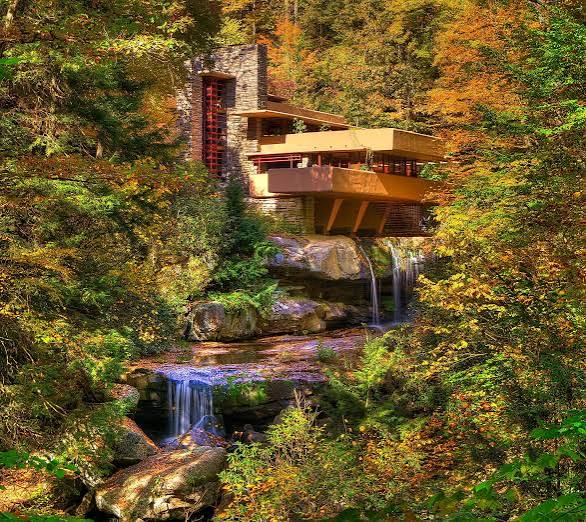

Wes Anderson is a filmmaker who has been both nominated and won many awards for his films. A list of his films include Moonrise Kingdom, The Grand Budapest Hotel, and The Life Aquatic with Steve Zissou. I think I am most inspired by his color palettes and the moods they evoke within each scene. The colors tend to be very vibrant and fit the tone and complement the arrangement of the scene.

He is an architect widely known throughout America. He has built houses, churches, and various other buildings. I think I am inspired by his unique style. I really like the modernist elements to his buildings but I especially appreciate how the buildings fit into their natural surroundings and have a very artistic quality to them.
She is a painter as well as a tattoo artist just outside my hometown in SoCal. I primarily admire her tattoo work because of her amazing line work and flash. Her style really inspires me and my own artwork because of how confident and also soft her lines and shading art. Her work feels very full of life and is a great example of how tattoos and tattooing is an art.
While creating this page I experimented with a little bit of CSS to change the color and the font. I am excited to learn more because I love making things look pretty and aesthetically pleasing. At first when I went to place my hyperlinks in, I forgot to include the "href=(link)"" inside of the first anchor tag. I guess I wasn't fully paying attention to that part of the lecture but once I went back to the slides I found my error and now all of my links work :)